eng.
the design journal of
Fatima Ibrahim Maideribe
projects, sketches & the messy bits in between
open me →
Fatima ✿
design engineer & creative technologist
I like building things that sit between people and technology: apps that nudge better habits, devices that make data feel human, and interfaces that are playful without getting in the way.
After a BSc in Creative Computing I moved into Design Engineering at Imperial College London. This journal is where I keep the projects, and the journey behind each one.
Off the clock: the outdoors, new recipes and fantasy novels.
if found, please return to
- fatimamaideribe@gmail.com
- Fatima Ibrahim Maideribe
contents
- a focus app you unlock by finishing the task
- an ESP32 plant that tells you how it feels
- study robot, A* snake, Wildwise, fan, bakery
- email, LinkedIn
flip with the corners, the arrow keys, or jump with the tabs →scroll down, or jump with the tabs up top ↑
FlowState
you earn your break by finishing the task, not by waiting out a timer.
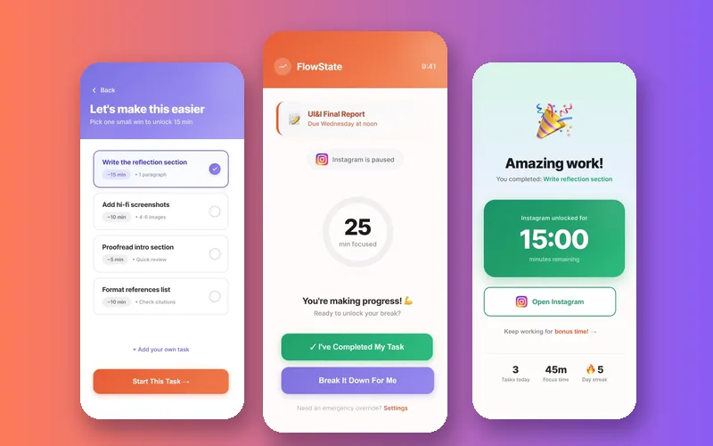
the final design ✦Phone blockers run on a timer that ends whether or not you worked, and to-do apps do nothing when you reach for your phone. Nothing checked that the task was done.
the brief
- role
- solo: research, UX, UI, testing
- module
- User Interfaces, Imperial · March 2026
- tools
- Figma, paper prototypes, think-aloud tests
the journey
- 1talk to people4 interviews with grad students: starting is the hard part
- 2map the momentone flow: tempted → paused → break it down → prove it → reward
- 3sticky-note itpaper prototypes; 3 buttons became 2
- 4wireframegreyscale lo-fi to lock the hierarchy
- 5make it realhi-fi in Figma: coral = action, purple = focus, teal = success
- 6test it6 think-aloud sessions, then iterate
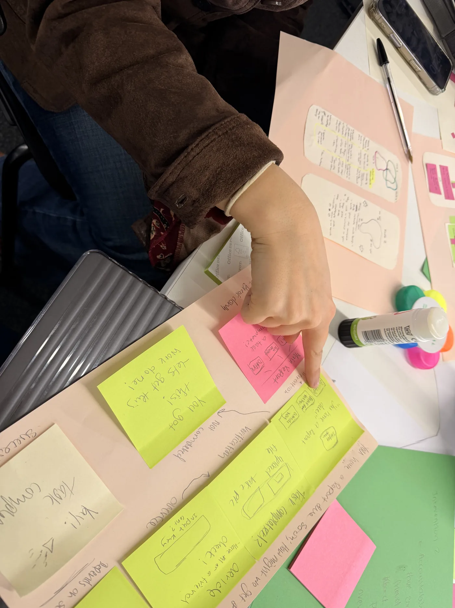
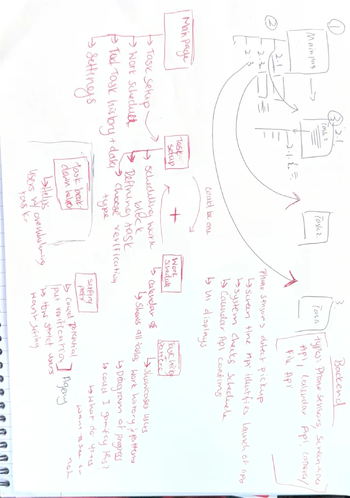
— participant 3
the happy path
Marcus opens Instagram out of habit. FlowState steps in:
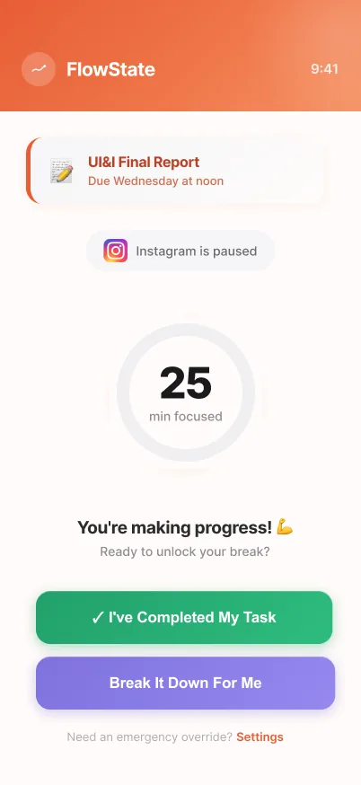
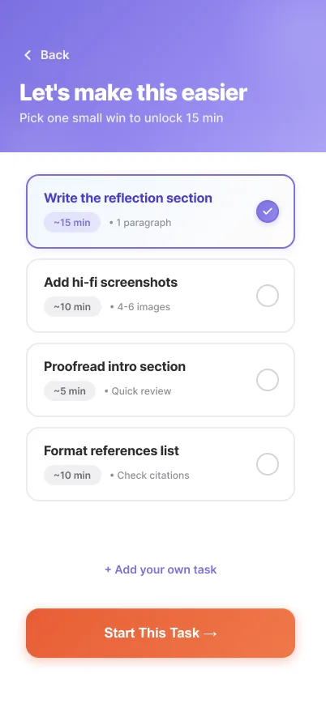
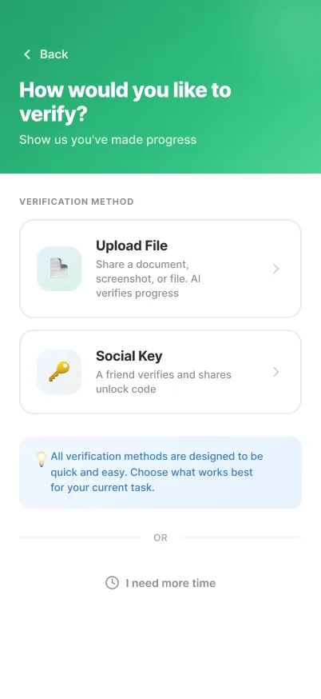
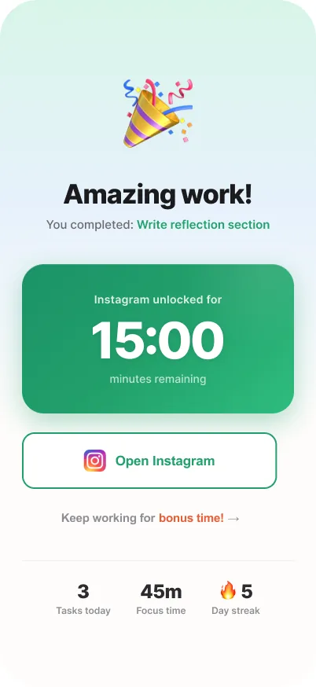
"Instagram is paused", not blockedbreak it down into 15-min bitesprove it: photo or friend's code15:00 of guilt-free scrolling!
what testing changed
- only the app icon triggers it → the notification does too (people tapped that first!)
- tap the tiny upload button → the whole preview is tappable
- "photo" + "file upload" → one upload proof option
what I'd do next time
Test with people beyond postgrads, since procrastination covers chores and working life too, and design the missing flows: onboarding, calendar sync and how strict the app should be.
6Smart Plant Buddy
"is my green thumb not so green?"
 meet my Polyscias 🌱
meet my Polyscias 🌱
the brief
- role
- solo: hardware, firmware, cloud, analysis
- module
- Sensing & IoT, Imperial · Dec 2025
- stack
- ESP32, Firebase, Chart.js, Python
the journey
- 1calibratesoil: dry air vs. submerged. <1500 = thirsty
- 2wire it upESP32 + soil, light, temp & humidity sensors
- 3send it to the cloudFirebase every 15 min, live via WebSockets
- 4give it a facea rule-based mood shown on a tiny OLED
- 5live with ita week of data, a dashboard, a pilot with family

 it's happy! (^ ^)
it's happy! (^ ^)
moods: happy (^ ^) · thirsty (O O) · hot (> <) · drowning (@ @) · ok (:—)
8what the data said


- ✓ 237 ms uploads (goal <500)
- ✓ 95% mood accuracy
- ✓ 99.7% uptime
- ✓ caught all 7 waterings, 0 false alarms
- ✓ 80% of testers checked the face over the numbers
things that went wrong
- jittery soil readings (WiFi interference) → average 10 samples
- green gunk on the probe (copper oxide!) → clean it or swap in a spare
- laggy charts → downsample 700 points to 200
next time
Automatic watering, a camera to check leaf health, more species profiles, and proper security: auth rules, no hard-coded WiFi and certificate pinning.
10before the MSc…
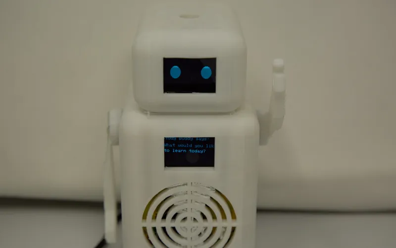
AI Study Buddy A* Snake
A* Snake
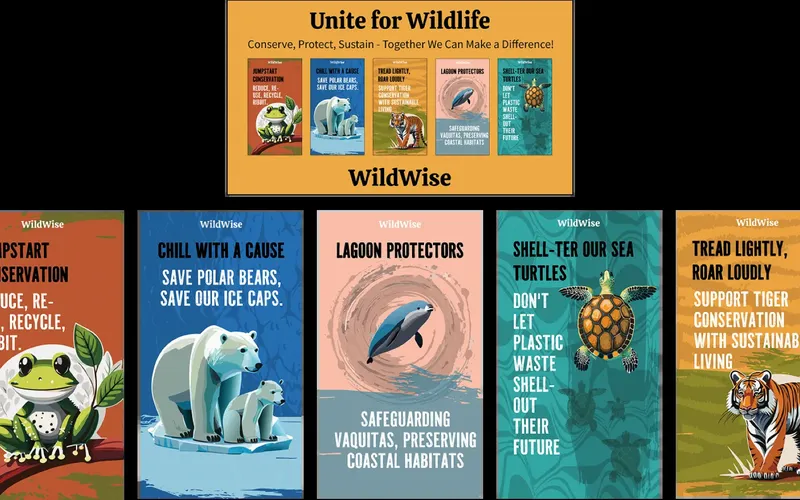
Wildwisetap a photo to read about it ↗
11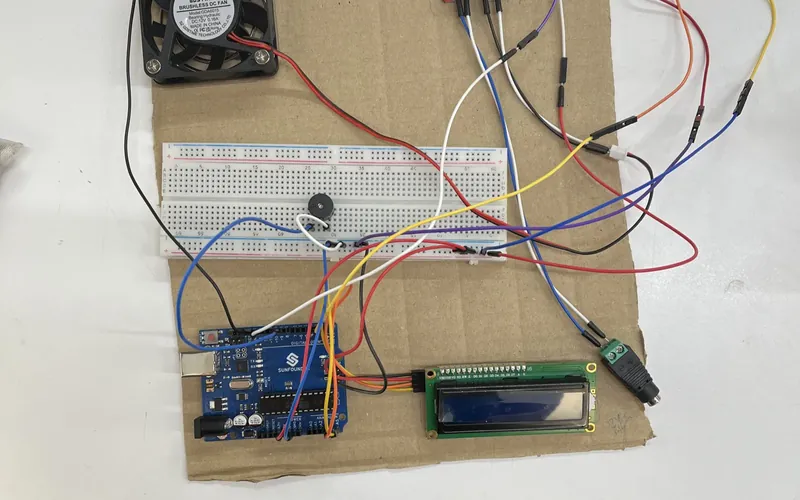
Exhaust Fan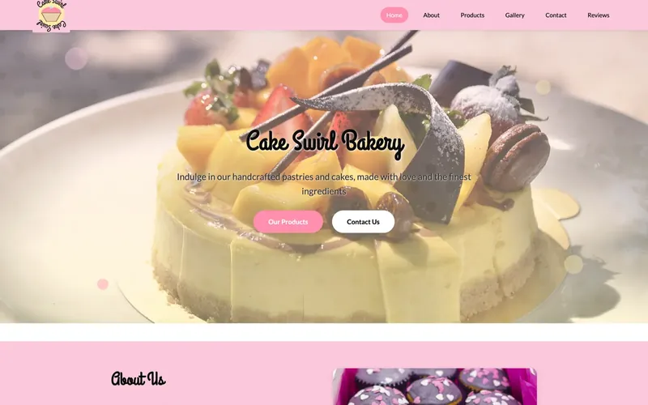
Bakery Websitesay hi! ✉
I'm always happy to chat about UX, IoT, creative tech, or a project you're working on.
find me
- fatimamaideribe@gmail.com
- Fatima Ibrahim Maideribe
psst…
prefer something a little more Y2K?
⊞ The desktop version of this site 🗂️📱
🪴 welcome! type 'help' 🚀
↑ click to boot it up
14reading ♡